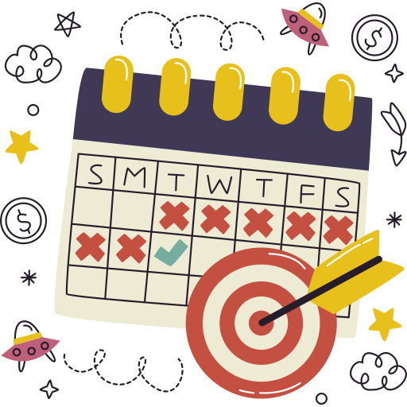
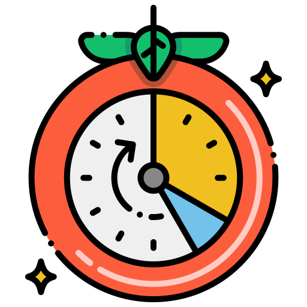

Метод Фейнмана
Как объяснять тему простыми словами и находить пробелы в понимании.
Читать далееМетоды обучения, тайм‑менеджмент и продуктивность: практичные техники и привычки.
Читать статьиЭффективное обучение строится на ясных целях, планировании и устойчивых привычках. Методы Фейнмана, интерливинг и практика извлечения помогают глубже понять материал. Тайм‑менеджмент через технику «Помодоро» и календарные блоки позволяет поддерживать концентрацию. Продуктивность — это не скорость, а устойчивый ритм, основанный на регулярных шагах и повторении.



Как объяснять тему простыми словами и находить пробелы в понимании.
Читать далееЧередование тем для ускорения обучения и повышения гибкости мышления.
Читать далееЦиклы концентрации по 25 минут и короткие перерывы для продуктивности.
Читать далее